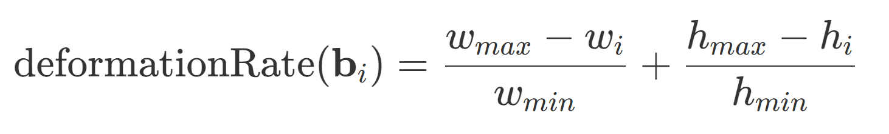

SportsMOT Dataset
A Large-Scale Multi-Object Tracking Dataset in Sports Scenes
Yutao Cui Xiaoyu Zhao Chenkai Zeng Yichun Yang Limin Wang
MCG Group @ Nanjing University

Abstract
Multi-object tracking (MOT) is a fundamental task in computer vision, aiming to estimate objects
(e.g., pedestrians and vehicles) bounding boxes and identities in video sequences.
Prevailing human-tracking MOT datasets mainly focus on pedestrians in crowded street scenes
(e.g., MOT17/20) or dancers in static scenes (DanceTrack). In spite of the increasing demands for
sports analysis, there is a lack of multi-object tracking datasets for a variety of sports scenes, where
the background is complicated, players possess rapid motion and the camera lens moves fast.
To this purpose, we propose a large-scale multi-object tracking dataset named SportsMOT,
consisting of 240 video clips from 3 categories (i.e., basketball, football and volleyball). The objective is
to only track players on the playground (i.e., except for a number of spectators, referees and coaches)
in various sports scenes. We expect SportsMOT to encourage the community to concentrate more on
the complicated sports scenes.
Demo Video
Please choose "1080P" for better experience.
Data Collection
We provide 240 sports video clips of 3 categories (i.e., basketball, football and volleyball), where are collected from Olymplic Games, NCAA Championship, and NBA on YouTube. Only the search results with 720P resolution, 25 FPS, and official recording are downloaded. All of the selected videos are cut into clips of average 485 frames manually, in which there is no shot change.
As for the diversity of video context, football games provide outdoor scenes and the rest results provide indoor scenes. Furthermore, the views of the playing courts do vary, which include common side view of crowded audience like in NBA, views from the serve zone in volleyball games, and aerial view in football games. Diverse scenes in our dataset will encourage the algorithms to generalize to different sports tracking settings.
There are a few examples as follows.
v_iIxMOsCGH58_c013
v_4LXTUim5anY_c013
v_8rG1vjmJHr4_c004
Dataset Statitics
There are 240 clips of the average 495 frames(19.8 seconds) in SportsMOT. We manually divide them into training, validation and test set, containing 45,45,150 videos respectively. It's guaranteed that every split does not have video clips from the same game.
Table 1 - Statistics of the annotations of 3 sports.
To measure the motion patterns of quantitatively, we introduce fragment speed.
We regard a track of identical ID, one start and one end point as a fragments. The speed of a fragment is the sum of center displacement between every 2 frames.
And we use deformation rate to measure the degree of deformation. Here, refer to the minimum width and height of bounding boxes in a track fragment.

Figure 1 - Distributions of the fragment speed in 3 sports in SportsMOT.
Rules
- Other tracking datasets (e.g., MOT20/) used for pretraining are forbidden.
- Each team can have one or more members.
Evaluation Metrics
For our benchmark and challenge, we consider HOTA as the main metric. More specifically, this metric can be decomposed into two components: DetA and AssA, focusing on detection and association accuracy, respectively.
Download
Please refer to the competition page for more information.